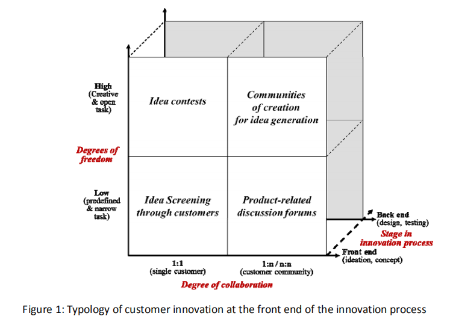
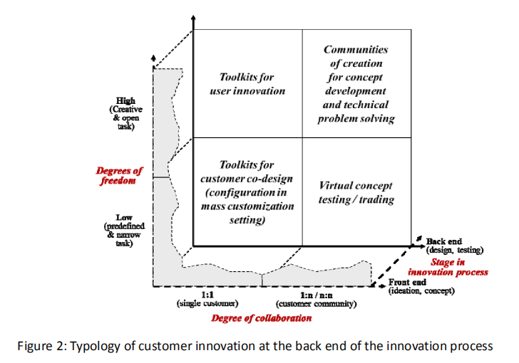

Review - Piller et al. - 2010 - A Typology of Customer Co-Creation in the Innovation
Piller, Frank T., Christoph Ihl, Alexander Vossen. A Typology of Customer Co-Creation in the Innovation Process. SSRN Electronic Journal, 2010. https://doi.org/10.2139/ssrn.1732127.
Abstract
Customer co‐creation denotes an active, creative and social collaboration process between producers (retailers) and customers (users), facilitated by the company. Customers become active participants in an open innovation process of a firm and take part in the development of new products or services. In this paper, we provide a review of the evolution of customer co‐creation and related forms of customer participation and suggest a typology of recent methods of co‐creation (open innovation with customers).
Main Points
The idea of open innovation was developed based on the access and transfer of two types of information:
- User need info: (Direct access when user innovate, UX, sales, CS team can play proxy role to help gain indirect access…) (Implicit user need: faster, cheaper, smaller, … universal preferrences produce incremental innnovations)
- Tech solution info: (Exploration of new ways of doing things) New tech Repurposed tech
innovation process can be seen as an interactive relationships among producers, users and many other different institutions
open innovation is defined as the formal discipline and practice of leveraging the discoveries of unobvious others as input for the innovation process through formal and informal relationships
A chronological review of important conceptual development of customer co‐creation:
- Market orientation: from craftsmanship to mass comsumption
- Customer Orientation: customer value creation
- Customer Centricity: mass customization and personalization
Three Modes of Interacting with Customers in the Innovation Process:
- “Listen into” the customer domain,
- “ask” customers,
- “build” with customers.
Lead users are characterized as users who (1) face needs that will become general in a marketplace much earlier before the bulk of that marketplace encounters them; and (2) are positioned to benefit significantly by obtaining a solution for those needs. Customer co‐creation, however, is built on a firm‐driven strategy that facilitates the interaction with its customers and users. Instead of just screening the user base to detect any existing prototypes created by lead users, here the firm provides instruments and tools to its users to actively co‐create a solution together.
A Typology Classification for Customer Co‐Creation is proposed based on three characteristics that form the conceptual dimensions:
- The stage in the innovation process: the time when customer input from co‐creation activities enters the new product development process;
- The degree of collaboration: the structure of the underlying relationships in an open innovation setting;
- The degrees of freedom: the nature of the task that has been assigned to customers
 